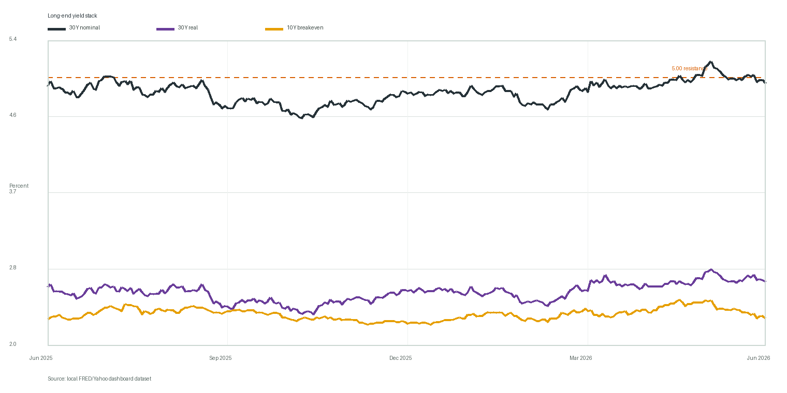
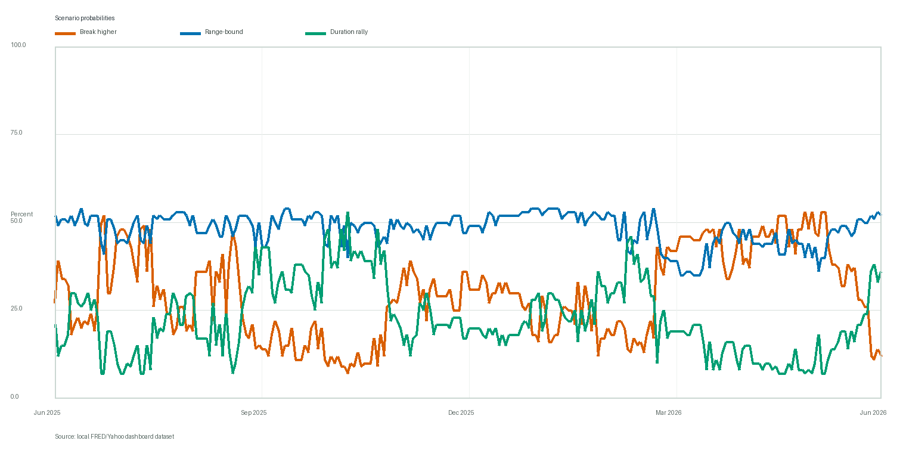

30-Year Treasury Yield Decision Report
Executive Summary
- The base case remains range-bound, but the skew is lower-yield rather than higher-yield. The model assigns 52% to range-bound, 36% to a duration rally, and only 12% to an upside yield break.
- The 30-year yield is still uncomfortably close to 5.00% resistance. The latest 30Y yield is 4.93%; this keeps breakout risk live even though the cross-market evidence is not confirming a fresh inflation or volatility shock.
- The main drivers are softer breakevens and easing real-rate momentum. Breakevens contribute -40 and real rates contribute -22 to the model impulse, offsetting term-premium concerns from the curve.
- Watch the confirmation set, not just the yield level. A close above 5.00% with rising breakevens, a steeper 10s30s curve, weak auctions, and a MOVE spike would challenge the current base case.
Yield Level Is High, But Inflation Momentum Is Not Confirming A Breakout
The key tension is level versus direction. Nominal and real long-end yields remain high enough to deserve respect, but breakevens have fallen -20 bp over the latest 21-day window and the real-yield change is only -11 bp. That makes a clean inflation-led upside break less convincing today.

Scenario Probabilities Have Moved Toward Range-Bound With Material Rally Risk
The model is not saying yields must fall; it is saying the evidence for a higher-yield break is weak. Versus the prior 21-session point, break-higher probability is -41 pts, range-bound is +12 pts, and duration rally is +29 pts.

What Changed In The Market Inputs
The strongest current read-through is that volatility and credit are calm while inflation pressure is cooling. That combination supports range-bound or lower-yield outcomes unless supply/auction pressure overwhelms the easing impulse.
| Metric | Current | Recent change | Read-through |
|---|---|---|---|
| 30Y nominal yield | 4.93% | n/a | Near the 5.00% resistance line; a sustained close above it would raise breakout risk. |
| 30Y real yield | 2.70% | -11 bp | Still high in level, but no longer accelerating in the latest 21-day window. |
| 10Y breakeven | 2.29% | -20 bp | Breakevens are easing, which argues against an inflation-led upside break. |
| 10s30s curve | 0.50% | -3 bp | A positively sloped long-end curve keeps term-premium and supply risk alive. |
| MOVE | 69.36 | -10.51 | Treasury volatility is not currently confirming a stress-led rate shock. |
| High yield OAS | 2.71% | -9 bp | Credit spreads remain contained; risk appetite is not yet forcing a duration bid. |
| DXY | 99.54 | +0.27% | A firmer dollar is a mild tightening impulse but not the dominant driver. |
| Gold futures | $4,331 | -4.94% | Gold has fallen over the recent window, reducing the case for a broad inflation-hedge impulse. |
| WTI crude | $76.05 | -22.33% | Oil futures are elevated, but recent momentum is lower in the model window. |
Driver Attribution
Breakevens are the biggest lower-yield force in the current model state, and they are already at the lower-yield edge of their 5-year daily contribution range. The factor labels are model impulse contributions, not raw market values. A negative contribution pushes the probability mix away from an upside yield break; the historical context column shows where that contribution sits versus the selected driver-history window.
| Factor | Contribution | Historical context | Exhaustion read-through | Model explanation |
|---|---|---|---|---|
| Technicals | -24 | 25th percentile of 5-year daily contribution range (-48 to +48) | Moderate impulse versus recent history. | Yield is close to the 50-day moving average and below the short-term average, so technical pressure is neutral. |
| Breakevens | -40 | 0th percentile of 5-year daily contribution range (-40 to +40) | Lower-yield impulse at historical extreme; watch for exhaustion if the underlying metric stabilizes. | Breakevens have fallen over the recent window, pulling the model away from an inflation-led yield breakout. |
| Real rates | -22 | 25th percentile of 5-year daily contribution range (-44 to +44) | Moderate impulse versus recent history. | Real yields remain high, but recent momentum is not adding new upside pressure. |
| Curve | -16 | 25th percentile of 5-year daily contribution range (-32 to +32) | Moderate impulse versus recent history. | The long-end curve remains positively sloped, keeping term-premium and supply pressure in the frame. |
| Risk appetite | +0 | 67th percentile of 5-year daily contribution range (-36 to +18) | Neutral or low impulse versus recent history. | Credit, volatility, and equity inputs are not currently flashing a broad risk-off duration bid. |
Do Extreme Driver Readings Predict Reversal?
The evidence is useful but not decisive. Over the 5-year context window, extreme lower-yield impulses have often been followed by some yield backup over the next 20 trading days, which supports using extremes as an exhaustion warning. But the signal is not clean enough to use alone because the sample overlaps heavily and the last five years had a broad upward drift in long-end yields.
| Factor | Edge | Signal tested | Samples | Avg next 20D 30Y move | Yield rose | Read-through |
|---|---|---|---|---|---|---|
| Technicals | Lower edge | lower-yield impulse extreme | 132 | +10.8 bp | 68.9% | Mostly followed by yield backup; treat as possible exhaustion or reversal risk around this lower-yield impulse extreme. |
| Technicals | Upper edge | higher-yield impulse extreme | 511 | +5.9 bp | 58.1% | Mostly followed by yield backup; treat as possible exhaustion or reversal risk around this higher-yield impulse extreme. |
| Breakevens | Lower edge | lower-yield impulse extreme | 270 | +5.1 bp | 61.9% | Mostly followed by yield backup; treat as possible exhaustion or reversal risk around this lower-yield impulse extreme. |
| Breakevens | Upper edge | higher-yield impulse extreme | 296 | +7.4 bp | 63.2% | Mostly followed by yield backup; treat as possible exhaustion or reversal risk around this higher-yield impulse extreme. |
| Real rates | Lower edge | lower-yield impulse extreme | 238 | +2.9 bp | 53.8% | Mixed forward evidence; not a strong standalone signal. |
| Real rates | Upper edge | higher-yield impulse extreme | 412 | +4.6 bp | 58.0% | Mostly followed by yield backup; treat as possible exhaustion or reversal risk around this higher-yield impulse extreme. |
| Curve | Lower edge | lower-yield impulse extreme | 224 | +8.0 bp | 56.7% | Mixed forward evidence; not a strong standalone signal. |
| Curve | Upper edge | higher-yield impulse extreme | 212 | +2.7 bp | 63.7% | Mixed forward evidence; not a strong standalone signal. |
| Risk appetite | Lower edge | lower-yield impulse extreme | 137 | +7.0 bp | 64.2% | Mostly followed by yield backup; treat as possible exhaustion or reversal risk around this lower-yield impulse extreme. |
| Risk appetite | Upper edge | higher-yield impulse extreme | 201 | +3.4 bp | 52.7% | Mixed forward evidence; not a strong standalone signal. |
Recommended Watch List
- Respect 5.00% on the 30Y yield. Two closes above resistance would justify lifting the upside-break probability.
- Separate breakeven pressure from real-rate pressure. A breakout led by real rates and term premium has different implications from one led by inflation expectations.
- Use auctions and MOVE as confirmation. A weak long-bond auction plus a Treasury-volatility spike would be more important than a single noisy daily yield move.
- Keep credit spreads in the decision frame. If HY OAS widens sharply, duration-rally risk should rise even if the 30Y yield has not yet fallen.
Further Questions
The next useful improvement is calibration: compare model probabilities with realized 10-, 20-, and 60-session forward yield outcomes and show where the model has historically over- or under-called breakouts. That would turn the current scoring framework from a disciplined heuristic into a measured forecasting tool.
Caveats And Assumptions
This is a decision-support report, not investment advice. FRED daily Treasury series are end-of-day observations and do not provide OHLC candlesticks for the 30Y yield. Yahoo Finance market series are used where FRED does not provide the desired market input, including MOVE, DXY, gold futures, equity indices, TLT, and WTI futures. Latest source dates by series: dfii30: 2026-06-16, dgs10: 2026-06-16, dgs2: 2026-06-16, dgs30: 2026-06-16, dxy: 2026-06-18, gold: 2026-06-18, hy_oas: 2026-06-16, move: 2026-06-12, ndx: 2026-06-17, oil: 2026-06-15, oil_yahoo: 2026-06-18, spx: 2026-06-17, t10yie: 2026-06-17, tlt: 2026-06-17, vix: 2026-06-16.